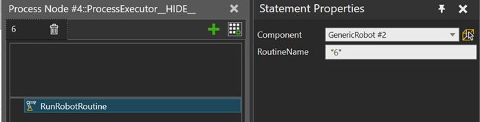

A Run Robot Routine statement allows you to run a pre-programmed routine on a robot. Multiple process executors can share a robot by using this statement type. It is also possible to use that same robot from python, as long as that python code follows the instructions defined below.
The statement will wait until the robot is idle, then evaluate the given RoutineName expression and try to find the routine, then start the routine, and only return after the routine has been executed to completion.
Evaluation of the RoutineName expression, as well as searching for that routine on the robot executor is performed again each time the robot is detected to become idle. It is possible to access PM product variables in the RoutineName expression.

| Name | Description |
| Component | The component from which to search for a robot executor. If the component has multiple robot executors, the first one of the these will be selected. Null can be used to select the component that owns the process executor that is running this statement. |
| RoutineName | An expression that must evaluate to a string value. During execution, the statement will attempt to find a routine from the selected robot executor with that name. This expression evaluation and routine search will be performed again each time the robot becomes idle. |